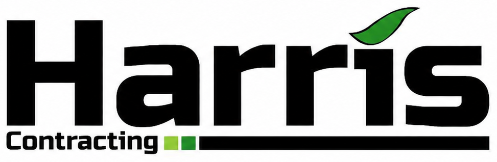

Andrew Harris
Owner
The boss, most often found in the paddock with his dog and his Claas Jaguar 960. Off the clock it is hunting, waterskiing and mountain biking.

027 318 8798Grass balage, maize silage and rural transport across Mid Canterbury. Family owned, based in Tinwald, run from the paddock rather than an office.
Every season runs on the same gear and the same crew, so you deal with people who know your paddocks by name.

Full-service mowing, raking and baling. We turn your pasture into tight, well-wrapped balage that holds its feed value through winter. Book early for the first cut or call us mid-season to top up the stack.

Power-packed feed for your herd. Maize silage lifts energy, extends lactation and gives your pasture a breather. We plant, chop and cart it, and we are taking contracts for the 2026 season now.

Shifting bales, hauling fine chop or moving general freight, delivered across the South Island. We have the gear and the grit to get it there in one piece. Need something moved? Talk to Andrew.
Shots from our own gear on Mid Canterbury farms, from first mow to the last bale carted off under lights.


Locals, ex-farmers and a few imports from Yorkshire, Cumbria and Golden Bay. You will see the same faces on your place all season.
Owner
The boss, most often found in the paddock with his dog and his Claas Jaguar 960. Off the clock it is hunting, waterskiing and mountain biking.

Chopping Manager
Ran his own contracting outfit in Golden Bay before getting a taste for Mid Canterbury work back in 2012. Runs the chopping crew.

Baling Manager
Fourteen years contracting around Mid Canterbury. Volunteers for the Willowby and Mayfield Fire Service when he is not building the baling team.

Main Chopper Driver
Ashburton local off a family farm near Southbridge, now in his second season here. Plays rugby through winter and has done a season in the UK.

Main Baler
One of our younger operators and not shy about showing the others how it is done. Grew up on a local family farm, handy with a drone too.

Wrapping and Mowing
Our second international, off a dairy and contracting family farm in Cumbria. Second season in New Zealand, first with Harris, often found on the stack.

Administration
A decade in dairy back in Yorkshire before crossing the pond for her first contracting season. Keeps the office straight with a bit of driving on the side.

Operations
Central Otago born and bred, with most of her working life on sheep and beef country. Find her on the Tinwald golf course when the season winds down.
Andrew built Harris Contracting around a simple idea: the person who quotes your job should be the one in the paddock doing it. The crew plants, mows, rakes, bales, chops and carts, and the trucks carry it wherever it needs to go.
We check soil temperature before we plant, we bale when the moisture is right, and we will work under lights when the weather window is tight. Your feed is our reputation.

Word travels fast in Mid Canterbury. Here is some of it.
Andrew and the crew did our whole first cut this season. Tight bales, wrapped properly, and they left the gateways tidier than they found them.Mark T. Dairy farmer, Hinds
Booked maize silage late and they still fitted us in. The chop quality was spot on and the stack was rolled and covered before the rain came through.Sarah M. Dairy farmer, Rakaia
Had them cart bales up from Southland. Turned up when they said they would, load was strapped right, price was fair. That is all you can ask.Dave R. Sheep and beef, Mayfield
 Find us on Google
Find us on Google
Ring the person who runs the job, or flick us an email with your rough hectares and timing and we will come back with a plan.